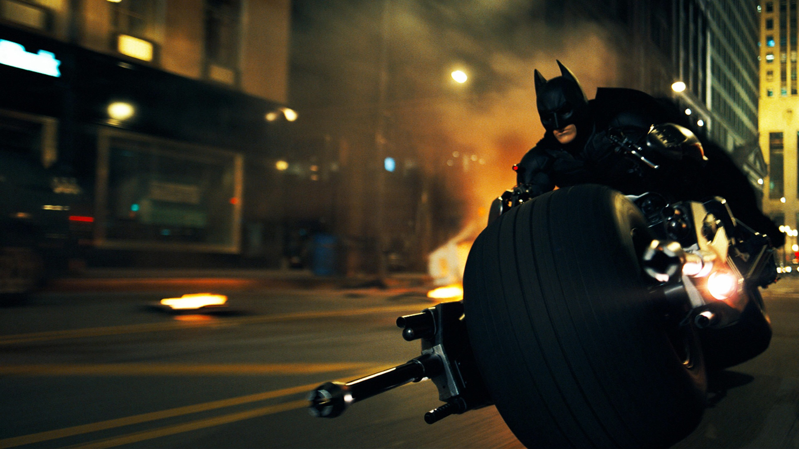

1 / 5

Batman
2 / 5

Superman
3 / 5

Wonder Woman
4 / 5

Hulk
5 / 5

Iron man
A superhero is a type of heroic stock character, usually possessing supernatural or superhuman powers, who is dedicated to fighting crime, protecting the public, and usually battling supervillains
Batman
My favorite cartoon character is Batman. He is an amazing guy, with great fighting skills who fights all the evils in the world. His real name is Bruce Waye. During his childhood he witnessed the murder of his parents. That incident shattered him and he decided to take up the challenge to fight the criminals in this world. He trained hard and acquired great fighting skills. He always stand by truth and justice and I love him so much. Batman spent his youth traveling the world, and improving himself mentally and physically. He is widely known as one of the most critical analytical minds on the planet. Given the lack of super powers, Batman often uses cunning and deceiving his opponents, instead of just fighting with them. All these qualities and skills are the advantage of Batman and make him a really strong character, worthy of admiration.
Captain America
Vowing to serve his country any way he could, young Steve Rogers took the super soldier serum to become America's one-man army. Fighting for the red, white and blue for over 60 years, Captain America is the living, breathing symbol of freedom and liberty. Dubbed Captain America and clad in a red, white, and blue costume with a matching stars-and-stripes shield, Rogers joins the U.S. Army, acquires a kid sidekick—plucky regimental mascot Bucky Barnes—and embarks on a career of enthusiastic Nazi-bashing. At that time Rogers once again became Captain America and Bucky resumed his clandestine operations—now as Captain America’s ally—as the Winter Soldier.
Hulk
The Hulk is a Marvel Comics superhero created by Stan Lee. The movie is about this scientist named Bruce Banner. His father murdered his mother while he was young and because of this, Bruce is traumatized. As a kid his father did some kind of experiment on him using Gamma Radiation. The experiment was a success, creating a monster inside of Bruce. The problem is that the monster lied inside of him dormant. Bruce and his assistant, Betty Ross, were working on something called nano-machines that could instantly heal wounds. This required a dangerous amount of gamma radiation to be effective. Bruce was caught up in this room that was filed with gamma rays that woke up the monster inside of him. When Bruce becomes angry, he transforms into "The Hulk", the monster inside of him. He did not transform...yet. The Hulk...
Iron Man
As a superhero who knows how to make money, satisfy the ladies and save the day, Iron Man has always been my favorite. High-tech suit of body armor aside, Tony Stark is everything I wasn’t as a teenager (and still ain’t). His line in “The Avengers” sums it up nicely when Captain America asks him what he is without his suit of armor. Iron Man’s creator Stan Lee said he set out to make a hero no one would like. Most superheroes are everyman type characters when it comes to their alter egos.With just his intellect, ingenuity and a couple million bucks, Iron Man is a self-made hero. Too bad all rich folks don’t spend their money that way.
Spiderman
Spider-Man is a fictional superhero in the Marvel Comics universe. He is a character created by writer Stan "the man" Lee and artist Steve Ditko. He first appeared in Amazing Fantasy #15 in August 1962. The premise was that he was an orphan being raised by his Aunt May and Uncle Ben as an ordinary teenager. He had to learn for himself that "with great power comes great responsibility" — a quote that he would cherish from his late Uncle Ben. Spider-Man has been one of the most popular and commercially successful superheroes. Often considered to be Marvel's flagship character and company mascot, he has appeared in many forms of media such as animation and movies.
Superman
I have been a huge fan of Superman for as long as I can remember. I was a young child when the first Christopher Reeve Superman movies came out, and remained un-jaded enough to keep a place for Ol’ Blue in my heart even as the dimly gothic Batmania of 1989 played right into my preteen angst. On the eve of his latest adventure, h cover some of what this particular fan thinks of Superman.
Wonder Woman
Wonder Woman is the ideal of girl power and strength. She is as strong and courageous as any man; thus, she has earned the respect of both females and males around the world. Wonder Woman is faster than Mercury and stronger than Hercules.In addition, Wonder Woman has a telepathically controlled, invisible jet that flies her quickly to the problem. In regards to strength, Wonder Woman has the ability to survive in a world seemingly dominated by men.Wonder Woman is a positive role model to everyone because she teaches people to do right. She also shows how the fairer sex can break free from their traditional roles. She shows that women can flourish in this world and influences girls everywhere to strive for excellence.
select your favorite SUPER HERO and be the one....